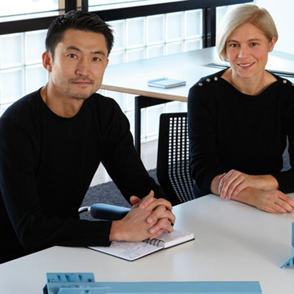
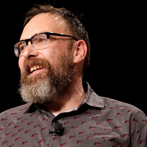

Tim Brown, is the former CEO of IDEO, a global design company. He also frequently speaks to designers and business leaders around the world about deisgn thinking, innovation, and creative leadership.
Nicola Felaco is the senior product designer at Spotify for their Core Experience Team. He is passionate about observing people and society through photos, notes, and illustrations, helping him simplify the complicated. Spotify has expanded past just a music player to a space of community and creativity, curating inspiration for musicians and artist alike.
Kristy Tillman currently oversees communication design for a company called Slack and has worked in design departments for other companies like the Society of Grownups. She also co-founded a nonprofit called Detroit Water Project.
Jon Gold is a musician, artist, technologist, and self-proclaimed learning addict who lives and works in the woods in California at a tech research studio called Cosmic Computation Laboratory. He sonsults with ethical companies and works to problem solve and create a more equitable world.
Masamichi Udagawa and Sigi Moeslinger are a power couple of designers who co-founded Antenna Design New York in 1997. Before that, Udagawa worked as a senior designer at Apple, exploring the relationship of new technology and society by way of user-centered design. Moeslinger worked as an Interval Research Fellow at NYU. Currently, she works with Yale Univeristy School of Art and Graphic Design as a visiting faculty member, as well as being judge for numerous design competitions.
Mike Monteiro co-founded Mule Design, a San Francisco-based design studio, with Erika Hall. Monteiro has spoken often at design conferences and his talks are very memorable, earning him the Talk of the Year title in 2014. In addition, he has published two books called "Design is a Job," and "You're My Favorite Client."
Susan Kare designed the famed Apple Macintosh interface icons and typefaces in the 1980s. She has also worked for Steve Jobs' company NeXT, Microsoft, Facebook, and most recently as a product design lead and now creative director at Pinterest.
Val Head, is an author, animation designer and an interface design advocate for Adobe. She specializes in UX and UI design. In 2016, she published a book called "Designing Interface Animation."